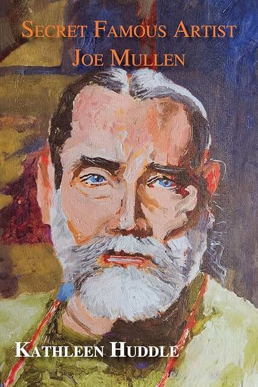

The art and life of
Joe Mullen
Joe Mullen was a Pennsylvania artist whose work moved freely among Expressionism, Realism, Fauvism, and Surrealism. Raised in the Susquehanna River valley in Sayre, he explored the landscape around him and recorded his thoughts, dreams, experiences, and emotions directly on canvas.
“A masterpiece is a piece of the master.”

The story behind the work
Secret Famous Artist Joe Mullen
Written by Joe’s sister in his honor, the book remembers a fiercely independent, deeply thoughtful artist and places his paintings alongside the convictions, humor, curiosity, and generosity that shaped his life and work.
View the book on AmazonSelected works
The paintings
Select a category, then choose a work to see it in full.